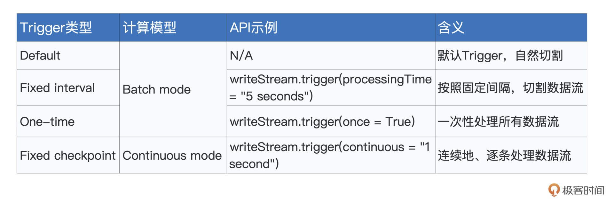
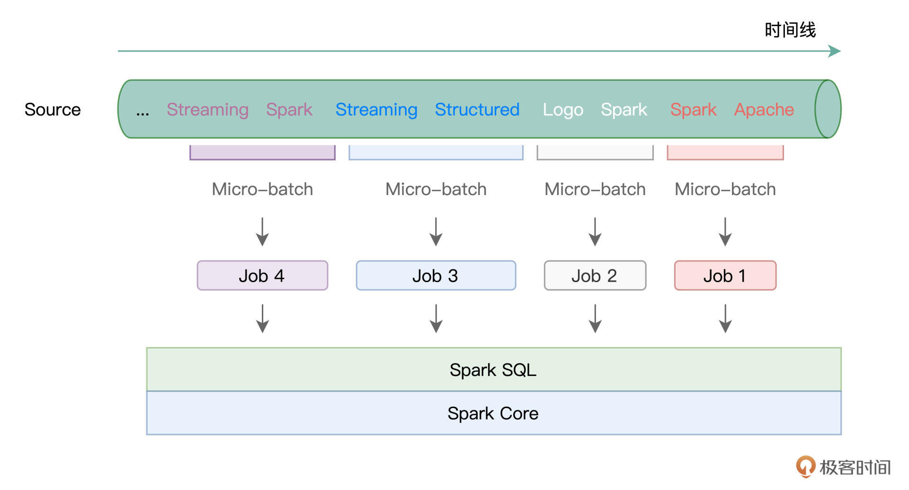
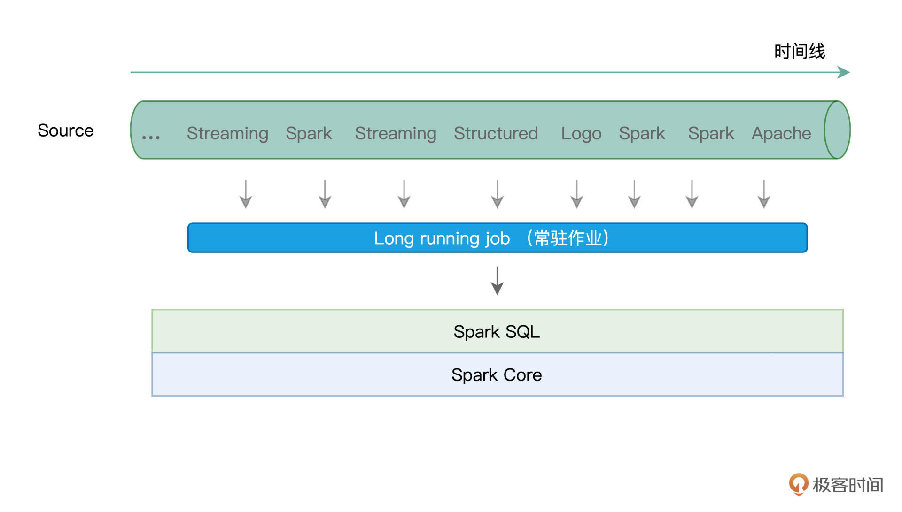
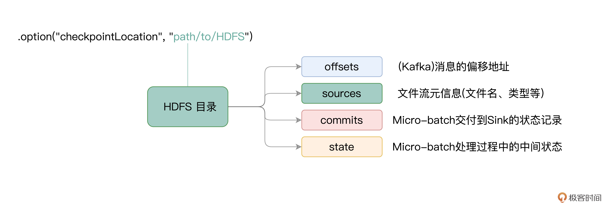
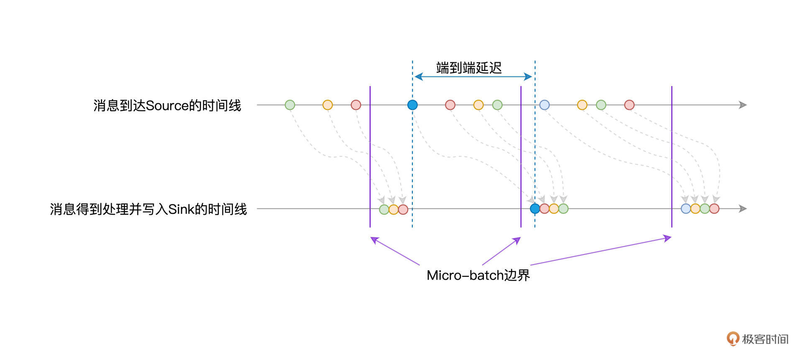
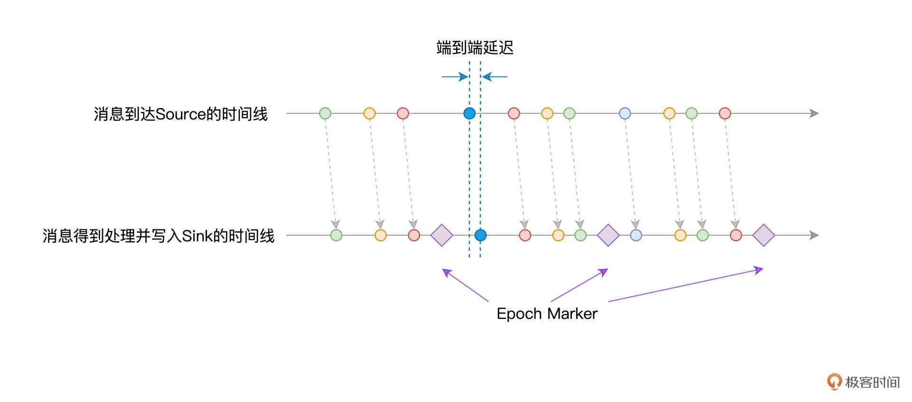

- 00 开篇词 入门Spark，你需要学会“三步走”.md.html
- 01 Spark：从“大数据的Hello World”开始.md.html
- 02 RDD与编程模型：延迟计算是怎么回事？.md.html
- 03 RDD常用算子（一）：RDD内部的数据转换.md.html
- 04 进程模型与分布式部署：分布式计算是怎么回事？.md.html
- 05 调度系统：如何把握分布式计算的精髓？.md.html
- 06 Shuffle管理：为什么Shuffle是性能瓶颈？.md.html
- 07 RDD常用算子（二）：Spark如何实现数据聚合？.md.html
- 08 内存管理：Spark如何使用内存？.md.html
- 09 RDD常用算子（三）：数据的准备、重分布与持久化.md.html
- 10 广播变量 & 累加器：共享变量是用来做什么的？.md.html
- 11 存储系统：数据到底都存哪儿了？.md.html
- 12 基础配置详解：哪些参数会影响应用程序稳定性？.md.html
- 13 Spark SQL：让我们从“小汽车摇号分析”开始.md.html
- 14 台前幕后：DataFrame与Spark SQL的由来.md.html
- 15 数据源与数据格式：DataFrame从何而来？.md.html
- 16 数据转换：如何在DataFrame之上做数据处理？.md.html
- 17 数据关联：不同的关联形式与实现机制该怎么选？.md.html
- 18 数据关联优化：都有哪些Join策略，开发者该如何取舍？.md.html
- 19 配置项详解：哪些参数会影响应用程序执行性能？.md.html
- 20 Hive + Spark强强联合：分布式数仓的不二之选.md.html
- 21 Spark UI（上）：如何高效地定位性能问题？.md.html
- 22 Spark UI（下）：如何高效地定位性能问题？.md.html
- 23 Spark MLlib：从“房价预测”开始.md.html
- 24 特征工程（上）：有哪些常用的特征处理函数？.md.html
- 25 特征工程（下）：有哪些常用的特征处理函数？.md.html
- 26 模型训练（上）：决策树系列算法详解.md.html
- 27 模型训练（中）：回归、分类和聚类算法详解.md.html
- 28 模型训练（下）：协同过滤与频繁项集算法详解.md.html
- 29 Spark MLlib Pipeline：高效开发机器学习应用.md.html
- 30 Structured Streaming：从“流动的Word Count”开始.md.html
- 31 新一代流处理框架：Batch mode和Continuous mode哪家强？.md.html
- 32 Window操作&Watermark：流处理引擎提供了哪些优秀机制？.md.html
- 33 流计算中的数据关联：流与流、流与批.md.html
- 34 Spark + Kafka：流计算中的“万金油”.md.html
- 用户故事 小王：保持空杯心态，不做井底之蛙.md.html
- 结束语 进入时间裂缝，持续学习.md.html
- 捐赠
31 新一代流处理框架：Batch mode和Continuous mode哪家强？
你好，我是吴磊。
在上一讲，我们通过“流动的Word Count”示例，初步结识了Structured Streaming，并学习了流处理开发三要素，也就是Source、流处理引擎与Sink。

今天这一讲，让我们把目光集中到Structured Streaming，也就是流处理引擎本身。Structured Streaming与Spark MLlib并列，是Spark重要的子框架之一。值得一提的是，Structured Streaming天然能够享受Spark SQL提供的处理能力与执行性能，同时也能与其他子框架无缝衔接。因此，基于Structured Streaming这个新一代框架开发的流处理应用，天然具备优良的执行性能与良好的扩展性。
知己知彼，百战百胜。想要灵活应对不同的实时计算需求，我们就要先了解Structured Streaming的计算模型长啥样，搞清楚它如何应对容错、保持数据一致性。我们先从计算模型说起。
计算模型
当数据像水流一样，源源不断地流进Structured Streaming引擎的时候，引擎并不会自动地依次消费并处理这些数据，它需要一种叫做Trigger的机制，来触发数据在引擎中的计算。
换句话说，Trigger机制，决定了引擎在什么时候、以怎样的方式和频率去处理接收到的数据流。Structured Streaming支持4种Trigger，如下表所示。

要为流处理设置Trigger，我们只需基于writeStream API，调用trigger函数即可。Trigger的种类比较多，一下子深入细节，容易让你难以把握重点，所以现在你只需要知道Structured Streaming支持种类繁多的Trigger即可。
我们先把注意力，放在计算模型上面。对于流数据，Structured Streaming支持两种计算模型，分别是Batch mode和Continuous mode。所谓计算模型，本质上，它要解决的问题，就是Spark以怎样的方式，来对待并处理流数据。
这是什么意思呢？没有对比就没有鉴别，咱们不妨通过对比讲解Batch mode和Continuous mode，来深入理解计算模型的含义。
Batch mode
我们先来说说Batch mode，所谓Batch mode，它指的是Spark将连续的数据流，切割为离散的数据微批（Micro-batch），也即小份的数据集。
形象一点说，Batch mode就像是“抽刀断水”，两刀之间的水量，就是一个Micro-batch。而每一份Micro-batch，都会触发一个Spark Job，每一个Job会包含若干个Tasks。学习过基础知识与Spark SQL模块之后，我们知道，这些Tasks最终会交由Spark SQL与Spark Core去做优化与执行。

在这样的计算模型下，不同种类的Trigger，如Default、Fixed interval以及One-time，无非是在以不同的方式控制Micro-batch切割的粒度罢了。
比方说，在Default Trigger下，Spark会根据数据流的流入速率，自行决定切割粒度，无需开发者关心。而如果开发者想要对切割粒度进行人为的干预，则可以使用Fixed interval Trigger，来明确定义Micro-batch切割的时间周期。例如，Trigger.ProcessingTime(“5 seconds”)，表示的是，每隔5秒钟，切割一个Micro-batch。
Continuous mode
与Batch mode不同，Continuous mode并不切割数据流，而是以事件/消息（Event / Message）为粒度，用连续的方式来处理数据。这里的事件或是消息，指代的是原始数据流中最细粒度的数据形式，它可以是一个单词、一行文本，或是一个画面帧。
以“流动的Word Count”为例，Source中的事件/消息就是一个个英文单词。说到这里，你可能会有疑问：“在Batch mode下，Structured Streaming不也是连续地创建Micro-batch吗？数据同样是不丢不漏，Continuous mode与Batch mode有什么本质上的区别吗？”

一图胜千言，对比两种计算模型的示意图，我们可以轻松地发现它们之间的差异所在。在Continuous mode下，Structured Streaming使用一个常驻作业（Long running job）来处理数据流（或者说服务）中的每一条消息。
那么问题来了，相比每个Micro-batch触发一个作业，Continuous mode选择采用常驻作业来进行服务，有什么特别的收益吗？或者换句话说，这两种不同的计算模型，各自都有哪些优劣势呢？
用一句话来概括，Batch mode吞吐量大、延迟高（秒级），而Continuous mode吞吐量低、延迟也更低（毫秒级）。吞吐量指的是单位时间引擎处理的消息数量，批量数据能够更好地利用Spark分布式计算引擎的优势，因此Batch mode在吞吐量自然更胜一筹。
而要回答为什么Continuous mode能够在延迟方面表现得更加出色，我们还得从Structured Streaming的容错机制说起。
容错机制
对于任何一个流处理引擎来说，容错都是一项必备的能力。所谓容错，它指的是，在计算过程中出现错误（作业层面、或是任务层面，等等）的时候，流处理引擎有能力恢复被中断的计算过程，同时保证数据上的不重不漏，也即保证数据处理的一致性。
从数据一致性的角度出发，这种容错的能力，可以划分为3种水平：
- At most once：最多交付一次，数据存在丢失的风险；
- At least once：最少交付一次，数据存在重复的可能；
- Exactly once：交付且仅交付一次，数据不重不漏。
这里的交付，指的是数据从Source到Sink的整个过程。对于同一条数据，它可能会被引擎处理一次或（在有作业或是任务失败的情况下）多次，但根据容错能力的不同，计算结果最终可能会交付给Sink零次、一次或是多次。
聊完基本的容错概念之后，我们再说回Structured Streaming。就Structured Streaming的容错能力来说，Spark社区官方的说法是：“结合幂等的Sink，Structured Streaming能够提供Exactly once的容错能力”。
实际上，这句话应该拆解为两部分。在数据处理上，结合容错机制，Structured Streaming本身能够提供“At least once”的处理能力。而结合幂等的Sink，Structured Streaming可以实现端到端的“Exactly once”容错水平。
比方说，应用广泛的Kafka，在Producer级别提供跨会话、跨分区的幂等性。结合Kafka这样的Sink，在端到端的处理过程中，Structured Streaming可以实现“Exactly once”，保证数据的不重不漏。
不过，在 Structured Streaming 自身的容错机制中，为了在数据处理上做到“At least once”，Batch mode 与 Continuous mode 这两种不同的计算模型，分别采用了不同的实现方式。而容错实现的不同，正是导致两种计算模型在延迟方面差异巨大的重要因素之一。
接下来，我们就来说一说，Batch mode 与 Continuous mode 分别如何做容错。
Batch mode容错
在Batch mode下，Structured Streaming利用Checkpoint机制来实现容错。在实际处理数据流中的Micro-batch之前，Checkpoint机制会把该Micro-batch的元信息全部存储到开发者指定的文件系统路径，比如HDFS或是Amazon S3。这样一来，当出现作业或是任务失败时，引擎只需要读取这些事先记录好的元信息，就可以恢复数据流的“断点续传”。
要指定Checkpoint目录，只需要在writeStream API的option选项中配置checkpointLocation即可。我们以上一讲的“流动的Word Count”为例，代码只需要做如下修改即可。
df.writeStream
// 指定Sink为终端（Console）
.format("console")
// 指定输出选项
.option("truncate", false)
// 指定Checkpoint存储地址
.option("checkpointLocation", "path/to/HDFS")
// 指定输出模式
.outputMode("complete")
//.outputMode("update")
// 启动流处理应用
.start()
// 等待中断指令
.awaitTermination()
在Checkpoint存储目录下，有几个子目录，分别是offsets、sources、commits和state，它们所存储的内容，就是各个Micro-batch的元信息日志。对于不同子目录所记录的实际内容，我把它们整理到了下面的图解中，供你随时参考。
- 对于每一个Micro-batch来说，在它被Structured Streaming引擎实际处理之前，Checkpoint机制会先把它的元信息记录到日志文件，因此，这些日志文件又被称为Write Ahead Log（WAL日志）。
换句话说，当源数据流进Source之后，它需要先到Checkpoint目录下进行“报道”，然后才会被Structured Streaming引擎处理。毫无疑问，“报道”这一步耽搁了端到端的处理延迟，如下图所示。

除此之外，由于每个Micro-batch都会触发一个Spark作业，我们知道，作业与任务的频繁调度会引入计算开销，因此也会带来不同程度的延迟。在运行模式与容错机制的双重加持下，Batch mode的延迟水平往往维持在秒这个量级，在最好的情况下能达到几百毫秒左右。
Continuous mode容错
相比Batch mode，Continuous mode下的容错没那么复杂。在Continuous mode下，Structured Streaming利用Epoch Marker机制，来实现容错。
因为Continuous mode天然没有微批，所以不会涉及到微批中的延迟，到达Source中的消息可以立即被Structured Streaming引擎消费并处理。但这同时也带来一个问题，那就是引擎如何把当前的处理进度做持久化，从而为失败重试提供可能。
为了解决这个问题，Spark引入了Epoch Marker机制。所谓Epoch Marker，你可以把它理解成是水流中的“游标”，这些“游标”随着水流一起流动。每个游标都是一个Epoch Marker，而游标与游标之间的水量，就是一个Epoch，开发者可以通过如下语句来指定Epoch间隔。
writeStream.trigger(continuous = "1 second")
以表格中的代码为例，对于Source中的数据流，Structured Streaming每隔1秒，就会安插一个Epoch Marker，而两个Epoch Marker之间的数据，就称为一个Epoch。你可能会问：“Epoch Marker的概念倒是不难理解，不过它有什么用呢？”
在引擎处理并交付数据的过程中，每当遇到Epoch Marker的时候，引擎都会把对应Epoch中最后一条消息的Offset写入日志，从而实现容错。需要指出的是，日志的写入是异步的，因此这个过程不会对数据的处理造成延迟。
有意思的是，对于这个日志的称呼，网上往往也把它叫作Write Ahead Log。不过我觉得这么叫可能不太妥当，原因在于，准备写入日志的消息，都已经被引擎消费并处理过了。Batch mode会先写日志、后处理数据，而Continuous mode不一样，它是先处理数据、然后再写日志。所以，把Continuous mode的日志称作是“Write After Log”，也许更合适一些。
我们还是用对比的方法来加深理解，接下来，我们同样通过消息到达Source与Structured Streaming引擎的时间线，来示意Continuous mode下的处理延迟。

可以看到，消息从Source产生之后，可以立即被Structured Streaming引擎消费并处理，因而在延迟性方面，能够得到更好的保障。而Epoch Marker则会帮助引擎识别当前最新处理的消息，从而把相应的Offset记录到日志中，以备失败重试。
重点回顾
到此为止，今天的内容就全部讲完了，我们一起来做个总结。
今天这一讲，我们学习了Structured Streaming中两种不同的计算模型——Batch mode与Continuous mode。只有了解了它们各自在吞吐量、延迟性和容错等方面的特点，在面对日常工作中不同的流计算场景时，我们才能更好地做出选择。
在Batch mode下，Structured Streaming会将数据流切割为一个个的Micro-batch。对于每一个Micro-batch，引擎都会创建一个与之对应的作业，并将作业交付给Spark SQL与Spark Core付诸优化与执行。
Batch mode的特点是吞吐量大，但是端到端的延迟也比较高，延迟往往维持在秒的量级。Batch mode的高延迟，一方面来自作业调度本身，一方面来自它的容错机制，也就是Checkpoint机制需要预写WAL（Write Ahead Log）日志。
要想获得更低的处理延迟，你可以采用Structured Streaming的Continuous mode计算模型。在Continuous mode下，引擎会创建一个Long running job，来负责消费并服务来自Source的所有消息。
在这种情况下，Continuous mode天然地避开了频繁生成、调度作业而引入的计算开销。与此同时，利用Epoch Marker，通过先处理数据、后记录日志的方式，Continuous mode进一步消除了容错带来的延迟影响。
尺有所短、寸有所长，Batch mode在吞吐量上更胜一筹，而Continuous mode在延迟性方面则能达到毫秒级。
不过，需要特别指出的是，到目前为止，在Continuous mode下，Structured Streaming仅支持非聚合（Aggregation）类操作，比如map、filter、flatMap，等等。而聚合类的操作，比如“流动的Word Count”中的分组计数，Continuous mode暂时是不支持的，这一点难免会限制Continuous mode的应用范围，需要你特别注意。
每课一练
Batch mode通过预写WAL日志来实现容错，请你脑洞一下，有没有可能参考Continuous mode中先处理数据、后记录日志的方式，把Batch mode中写日志的动作，也挪到数据消费与处理之后呢？
欢迎你在留言区跟我交流讨论，也推荐你把这一讲的内容分享给更多朋友。
© 2019 - 2023 Liangliang Lee. Powered by gin and hexo-theme-book.